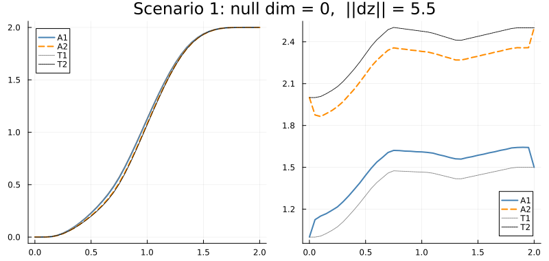
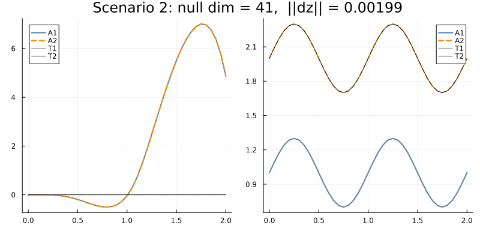
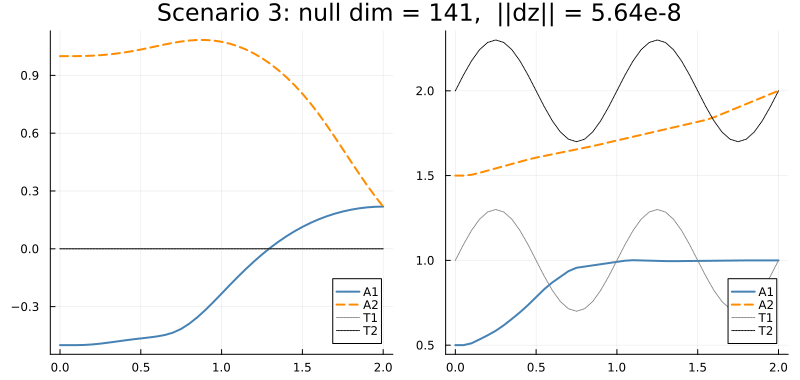
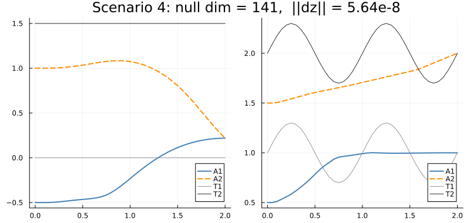
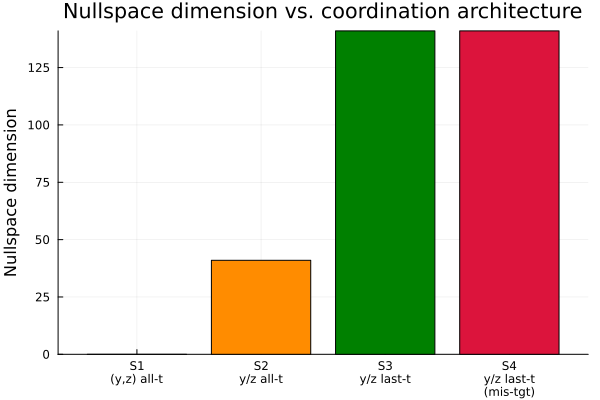

Multi-Agent Target Tracking via a Time-Expanded Cellular Sheaf
This example uses a time-expanded sheaf to study how coordination constraints determine the space of feasible agent trajectories. Four scenarios are compared; the nullspace dimension of the restricted sheaf Laplacian measures how many free degrees of freedom remain after constraints are imposed.
Vehicle model. Each agent or target is a planar quadrotor. The state is
\[x = [y,\, z,\, \varphi,\, \dot y,\, \dot z,\, \dot\varphi]^\top \in \mathbb{R}^6\]
where $y$ is the lateral position, $z$ is the altitude, and $\varphi$ is the roll angle. The control input is $u = [T_1, T_2]^\top \in \mathbb{R}^2$.
Sheaf structure. Each vertex $(\text{entity}, t)$ carries a stalk $\mathbb{R}^{n_x + n_u} = \mathbb{R}^8$. Three edge families encode:
- Dynamics: $x_{t+1} = A_d x_t + B_d u_t$.
- Consensus: inter-agent agreement on a chosen coordinate subspace.
- Tracking: agent–target alignment in a chosen coordinate subspace.
By varying which coordinates are constrained and at which timesteps, we obtain four qualitatively different solution spaces whose nullspace dimensions tell the story of the engineering constraints.
The helper types (TrackingEdge, TrackingProblem, BobbingTarget, ScenarioResult) and all solver utilities live in CellularSheaves.ControlSheaves.MultiAgentTracking and can be reused by other examples without copying code.
using CellularSheaves
using CellularSheaves.ControlSheaves.MultiAgentTracking
using CellularSheaves.TrajectorySheaves: continuous_to_discrete_zoh
using LinearAlgebra
using PlotsPlanar Quadrotor Dynamics
State: $x = [y, z, \varphi, \dot y, \dot z, \dot\varphi]$. The linearisation is taken around the hover trim condition.
g = 9.81
m_veh = 0.5
I_quad = 0.01
ell = 0.25
Ac = [0.0 0.0 0.0 1.0 0.0 0.0;
0.0 0.0 0.0 0.0 1.0 0.0;
0.0 0.0 0.0 0.0 0.0 1.0;
0.0 0.0 -g 0.0 0.0 0.0;
0.0 0.0 0.0 0.0 0.0 0.0;
0.0 0.0 0.0 0.0 0.0 0.0]
Bc = [0.0 0.0;
0.0 0.0;
0.0 0.0;
0.0 0.0;
1.0 / m_veh 1.0 / m_veh;
ell / (2I_quad) -ell / (2I_quad)]
h = 0.05
Ad, Bd = continuous_to_discrete_zoh(Ac, Bc, h)
nx = size(Ad, 1)
nu = size(Bd, 2)2State-index constants for the planar quadrotor.
IDX_Y = 1 # lateral position y
IDX_Z = 2 # altitude z
IDX_PHI = 3 # roll angle φ
IDX_YDT = 4 # ẏ
IDX_ZDT = 5 # ż
IDX_PHDT = 6 # φ̇6Plot Recipe
A Plots.jl recipe renders a ScenarioResult as a two-panel $y(t)$ / $z(t)$ figure. Agent trajectories use solid/dashed lines; target reference trajectories are shown as dotted lines for comparison.
@recipe function f(sr::ScenarioResult)
layout := (1, 2)
size := (800, 380)
plot_title := "$(sr.label): null dim = $(sr.null_dim), ||dz|| = $(round(sr.residual; sigdigits=3))"
agent_colors = [:steelblue, :darkorange, :green, :crimson]
agent_styles = [:solid, :dash, :dashdot, :dot]
target_colors = [:gray, :black, :darkgreen, :purple]
for (i, traj) in enumerate(sr.agent_trajs)
@series begin
subplot := 1
title := "y(t)"
xlabel := "t (s)"
ylabel := "y (m)"
label := "A$i"
lw := 2
linecolor := agent_colors[i]
linestyle := agent_styles[i]
sr.times, traj[:, sr.y_col]
end
@series begin
subplot := 2
title := "z(t)"
xlabel := "t (s)"
ylabel := "z (m)"
label := "A$i"
lw := 2
linecolor := agent_colors[i]
linestyle := agent_styles[i]
sr.times, traj[:, sr.z_col]
end
end
for (j, traj_j) in enumerate(sr.target_trajs)
@series begin
subplot := 1
label := "T$j"
lw := 1
linecolor := target_colors[j]
linestyle := :dot
sr.times, getindex.(traj_j, IDX_Y)
end
@series begin
subplot := 2
label := "T$j"
lw := 1
linecolor := target_colors[j]
linestyle := :dot
sr.times, getindex.(traj_j, IDX_Z)
end
end
endCommon Setup
All four scenarios use two agents and two targets over a 40-step horizon (2 s). The projection matrices are defined once and reused:
- $R_{yz}$: projects the $(n_x + n_u)$-stalk onto $(y, z)$ (Scenario 1).
- $R_y$: projects onto $y$ only (consensus in Scenarios 2–4).
- $R_z$: projects onto $z$ only (tracking in Scenarios 2–4).
n_agents = 2
n_targets = 2
k = 40
times = h .* collect(0:k)
R_yz = state_projection_matrix([IDX_Y, IDX_Z], nx, nu)
R_y = state_projection_matrix([IDX_Y], nx, nu)
R_z = state_projection_matrix([IDX_Z], nx, nu)1×8 Matrix{Float64}:
0.0 1.0 0.0 0.0 0.0 0.0 0.0 0.0Bobbing targets used in Scenarios 2–4. Both complete two full vertical cycles over the 2-second horizon.
omega_2periods = 2π * 2 / (k * h)
bt1 = BobbingTarget(0.0, 1.0, 0.3, omega_2periods)
bt2 = BobbingTarget(0.0, 2.0, 0.3, omega_2periods)
traj_bt1 = trajectory(bt1, 0:k, h, nx, nu, IDX_Y, IDX_Z, IDX_ZDT)
traj_bt2 = trajectory(bt2, 0:k, h, nx, nu, IDX_Y, IDX_Z, IDX_ZDT)41-element Vector{Vector{Float64}}:
[0.0, 2.0, 0.0, 0.0, 1.8849555921538759, 0.0, 0.0, 0.0]
[0.0, 2.0927050983124844, 0.0, 0.0, 1.7926992988449335, 0.0, 0.0, 0.0]
[0.0, 2.176335575687742, 0.0, 0.0, 1.524961107694578, 0.0, 0.0, 0.0]
[0.0, 2.2427050983124843, 0.0, 0.0, 1.107949098294274, 0.0, 0.0, 0.0]
[0.0, 2.285316954888546, 0.0, 0.0, 0.58248331161764, 0.0, 0.0, 0.0]
[0.0, 2.3, 0.0, 0.0, 1.1542024162330739e-16, 0.0, 0.0, 0.0]
[0.0, 2.285316954888546, 0.0, 0.0, -0.5824833116176402, 0.0, 0.0, 0.0]
[0.0, 2.2427050983124843, 0.0, 0.0, -1.107949098294274, 0.0, 0.0, 0.0]
[0.0, 2.176335575687742, 0.0, 0.0, -1.5249611076945777, 0.0, 0.0, 0.0]
[0.0, 2.0927050983124844, 0.0, 0.0, -1.7926992988449335, 0.0, 0.0, 0.0]
⋮
[0.0, 1.8236644243122582, 0.0, 0.0, -1.5249611076945784, 0.0, 0.0, 0.0]
[0.0, 1.757294901687516, 0.0, 0.0, -1.1079490982942746, 0.0, 0.0, 0.0]
[0.0, 1.7146830451114539, 0.0, 0.0, -0.5824833116176374, 0.0, 0.0, 0.0]
[0.0, 1.7, 0.0, 0.0, -8.079416913631517e-16, 0.0, 0.0, 0.0]
[0.0, 1.7146830451114539, 0.0, 0.0, 0.5824833116176391, 0.0, 0.0, 0.0]
[0.0, 1.7572949016875157, 0.0, 0.0, 1.1079490982942735, 0.0, 0.0, 0.0]
[0.0, 1.823664424312258, 0.0, 0.0, 1.5249611076945773, 0.0, 0.0, 0.0]
[0.0, 1.9072949016875163, 0.0, 0.0, 1.7926992988449342, 0.0, 0.0, 0.0]
[0.0, 1.9999999999999998, 0.0, 0.0, 1.8849555921538759, 0.0, 0.0, 0.0]Named edge configurations reused across scenarios.
edges_12 = [(1, 2)]
te_yz = [TrackingEdge(1, 1, R_yz, R_yz), TrackingEdge(2, 2, R_yz, R_yz)]
te_z = [TrackingEdge(1, 1, R_z, R_z), TrackingEdge(2, 2, R_z, R_z)]2-element Vector{CellularSheaves.ControlSheaves.MultiAgentTracking.TrackingEdge}:
CellularSheaves.ControlSheaves.MultiAgentTracking.TrackingEdge(1, 1, [0.0 1.0 … 0.0 0.0], [0.0 1.0 … 0.0 0.0])
CellularSheaves.ControlSheaves.MultiAgentTracking.TrackingEdge(2, 2, [0.0 1.0 … 0.0 0.0], [0.0 1.0 … 0.0 0.0])Scenario 1: Full (y,z) Coordination at Every Timestep
Both consensus and tracking edges use the $(y, z)$ projection, active at every timestep.
The two agents travel to distinct goals while each tracking its own target in full $(y, z)$. But the consensus edge demands that agents agree in $(y, z)$ at every step. Since the two targets travel different $(y, z)$ trajectories, the constraints "A1 tracks T1", "A2 tracks T2", and "A1 agrees with A2 in $(y,z)$" are mutually incompatible unless the targets coincide. The sheaf Laplacian has no kernel (null dim = 0) and harmonic_extension returns the least-squares compromise with a nonzero residual $\|dz\| > 0$.
x0_a1_s1 = [0.0, 1.0, 0.0, 0.0, 0.0, 0.0]
xk_a1_s1 = [2.0, 1.5, 0.0, 0.0, 0.0, 0.0]
x0_a2_s1 = [0.0, 2.0, 0.0, 0.0, 0.0, 0.0]
xk_a2_s1 = [2.0, 2.5, 0.0, 0.0, 0.0, 0.0]
traj_t1_s1 = generate_reference_trajectory(x0_a1_s1, xk_a1_s1, k, Ad, Bd, nx, nu)
traj_t2_s1 = generate_reference_trajectory(x0_a2_s1, xk_a2_s1, k, Ad, Bd, nx, nu)
prob1 = TrackingProblem(
n_agents, n_targets, k, Matrix(Ad), Matrix(Bd),
edges_12, te_yz, R_yz,
collect(0:k), collect(0:k),
true, 1.0, 5.0,
)
bnd1 = Dict{Int,Vector{Float64}}()
bnd1[agent_vertex(prob1, 1, 0)] = vcat(x0_a1_s1, zeros(nu))
bnd1[agent_vertex(prob1, 2, 0)] = vcat(x0_a2_s1, zeros(nu))
bnd1[agent_vertex(prob1, 1, k)] = vcat(xk_a1_s1, zeros(nu))
bnd1[agent_vertex(prob1, 2, k)] = vcat(xk_a2_s1, zeros(nu))
for t in 0:k
bnd1[target_vertex(prob1, 1, t)] = traj_t1_s1[t + 1]
bnd1[target_vertex(prob1, 2, t)] = traj_t2_s1[t + 1]
end
result1 = run_scenario("Scenario 1", prob1, bnd1, times;
target_trajs = [traj_t1_s1, traj_t2_s1], y_col = IDX_Y, z_col = IDX_Z)
plot(result1)
Scenario 2: y-Consensus and z-Tracking, All Timesteps, Aligned Initial Conditions
Targets bob vertically. Consensus edges constrain agents to agree only on lateral position $y$; tracking edges constrain each agent to match its assigned target in altitude $z$. Both edge families are active at every timestep.
Because the two targets share $y = 0$ and the consensus only constrains $y$, the system is consistent: agents can agree in $y$ while independently tracking different altitudes. A non-trivial nullspace (null dim > 0) arises because $z$ (and all other state components) remain unconstrained by the consensus edges. The TrackingEdge API makes it natural to assign different projection matrices to each agent–target pair.
Since all target vertices are pinned as boundary data, target dynamics edges are omitted (include_target_dynamics = false).
prob2 = TrackingProblem(
n_agents, n_targets, k, Matrix(Ad), Matrix(Bd),
edges_12, te_z, R_y,
collect(0:k), collect(0:k),
false, 1.0, 5.0,
)
x0_a1_s2 = [0.0, traj_bt1[1][IDX_Z], 0.0, 0.0, traj_bt1[1][IDX_ZDT], 0.0]
x0_a2_s2 = [0.0, traj_bt2[1][IDX_Z], 0.0, 0.0, traj_bt2[1][IDX_ZDT], 0.0]
bnd2 = Dict{Int,Vector{Float64}}()
bnd2[agent_vertex(prob2, 1, 0)] = vcat(x0_a1_s2, zeros(nu))
bnd2[agent_vertex(prob2, 2, 0)] = vcat(x0_a2_s2, zeros(nu))
for t in 0:k
bnd2[target_vertex(prob2, 1, t)] = traj_bt1[t + 1]
bnd2[target_vertex(prob2, 2, t)] = traj_bt2[t + 1]
end
result2 = run_scenario("Scenario 2", prob2, bnd2, times;
target_trajs = [traj_bt1, traj_bt2], y_col = IDX_Y, z_col = IDX_Z)
plot(result2)
Scenario 3: y-Consensus and z-Tracking at the Last Timestep Only
The same projection matrices as Scenario 2, but coordination edges are active only at $t = k$. Agents evolve freely (dynamics only) for $t = 0, \ldots, k-1$ and must converge to the terminal constraint.
Both targets share $y = 0$ (laterally aligned), but agents start misaligned with each other and with the targets in both $y$ and $z$. Removing $k$ timesteps of coordination edges dramatically enlarges the feasible space (null dim >> Scenario 2).
prob3 = TrackingProblem(
n_agents, n_targets, k, Matrix(Ad), Matrix(Bd),
edges_12, te_z, R_y,
[k], [k],
false, 1.0, 5.0,
)
x0_a1_s3 = [-0.5, 0.5, 0.0, 0.0, 0.0, 0.0]
x0_a2_s3 = [ 1.0, 1.5, 0.0, 0.0, 0.0, 0.0]
bnd3 = Dict{Int,Vector{Float64}}()
bnd3[agent_vertex(prob3, 1, 0)] = vcat(x0_a1_s3, zeros(nu))
bnd3[agent_vertex(prob3, 2, 0)] = vcat(x0_a2_s3, zeros(nu))
for t in 0:k
bnd3[target_vertex(prob3, 1, t)] = traj_bt1[t + 1]
bnd3[target_vertex(prob3, 2, t)] = traj_bt2[t + 1]
end
result3 = run_scenario("Scenario 3", prob3, bnd3, times;
target_trajs = [traj_bt1, traj_bt2], y_col = IDX_Y, z_col = IDX_Z)
plot(result3)
Scenario 4: Last-Timestep Constraints, Targets Not Aligned in y or z
Identical sheaf topology to Scenario 3, but Target 2 is now at $y = 1.5$ m instead of $y = 0$. The targets are not initially aligned with each other in either $y$ or $z$.
Because the sheaf topology (which edges exist at which timesteps) is unchanged, the restricted Laplacian's nullspace has the same dimension as Scenario 3. The two harmonic extensions produce different trajectories, but they live in equally large affine solution spaces, confirming that nullspace dimension is a structural property of the coordination architecture, not of the boundary data.
bt2_s4 = BobbingTarget(1.5, 2.0, 0.3, omega_2periods)
traj_bt2_s4 = trajectory(bt2_s4, 0:k, h, nx, nu, IDX_Y, IDX_Z, IDX_ZDT)
prob4 = TrackingProblem(
n_agents, n_targets, k, Matrix(Ad), Matrix(Bd),
edges_12, te_z, R_y,
[k], [k],
false, 1.0, 5.0,
)
x0_a1_s4 = [-0.5, 0.5, 0.0, 0.0, 0.0, 0.0]
x0_a2_s4 = [ 1.0, 1.5, 0.0, 0.0, 0.0, 0.0]
bnd4 = Dict{Int,Vector{Float64}}()
bnd4[agent_vertex(prob4, 1, 0)] = vcat(x0_a1_s4, zeros(nu))
bnd4[agent_vertex(prob4, 2, 0)] = vcat(x0_a2_s4, zeros(nu))
for t in 0:k
bnd4[target_vertex(prob4, 1, t)] = traj_bt1[t + 1]
bnd4[target_vertex(prob4, 2, t)] = traj_bt2_s4[t + 1]
end
result4 = run_scenario("Scenario 4", prob4, bnd4, times;
target_trajs = [traj_bt1, traj_bt2_s4], y_col = IDX_Y, z_col = IDX_Z)
plot(result4)
Comparison: How Constraints Shape the Solution Space
The four scenarios are summarised below. The nullspace dimension and Laplacian residual $\|dz\|$ are displayed via the ScenarioResult show method.
| Scenario | Consensus | Tracking | Active timesteps | Initial alignment |
|---|---|---|---|---|
| 1 | $(y,z)$ | $(y,z)$ | all $0:k$ | distinct endpoints |
| 2 | $y$ | $z$ | all $0:k$ | aligned with targets |
| 3 | $y$ | $z$ | terminal $k$ | unaligned; targets share $y$ |
| 4 | $y$ | $z$ | terminal $k$ | unaligned; targets offset in $y$ |
Constraint density governs nullspace size. Scenario 1 is infeasible: the $(y,z)$ consensus edge forces agents to share the same trajectory in the $yz$-plane, but tracking edges demand they follow different targets. The result is null dim = 0 with a nonzero least-squares residual — the energy minimiser finds a compromise, not a feasible trajectory. Scenario 2 (only $y$ consensus + $z$ tracking, all timesteps) is consistent and admits a family of solutions (null dim > 0) because fewer coordinates per edge are constrained. Restricting to the terminal timestep only (Scenarios 3–4) removes $k$ sets of constraints and dramatically enlarges the solution space.
Nullspace dimension is a topological invariant. Scenarios 3 and 4 share the same sheaf topology (identical edge structure) and therefore the same nullspace dimension, even though their target trajectories differ. The harmonic extensions produce different specific trajectories, but they live in equally large affine spaces. The nullspace dimension is a property of the coordination architecture, not the boundary data.
Feasibility is separate from trajectory shape. In Scenario 2, agents start consistent with all-time constraints, so the harmonic solution closely tracks the bobbing targets. In Scenarios 3–4, agents start misaligned; the minimum-energy harmonic path converges to the terminal constraint while the large nullspace deforms it freely in the unconstrained directions.
for r in (result1, result2, result3, result4)
show(stdout, MIME("text/plain"), r); println()
end
bar(["S1\n(y,z) all-t", "S2\ny/z all-t", "S3\ny/z last-t", "S4\ny/z last-t\n(mis-tgt)"],
[result1.null_dim, result2.null_dim, result3.null_dim, result4.null_dim];
ylabel = "Nullspace dimension",
title = "Nullspace dimension vs. coordination architecture",
legend = false,
color = [:steelblue, :darkorange, :green, :crimson])